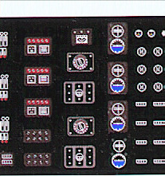
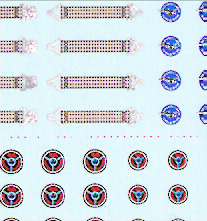
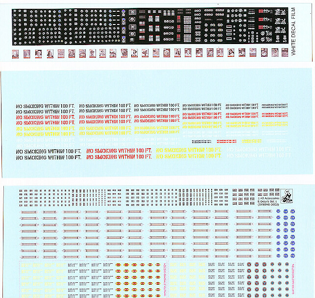

Skunk LabWorks
Assorted Aircraft Detailing Decals
Item # SKW048-D003
MSRP $12.50 Available from Skunk-LabWorks
Images and text Copyright � 2008 by Matt Swan
Skunk-LabWorks is one of those little cottage industries producing some high end specialty items. They offer some resin pieces aimed at 1/144 airliners and some airliner decals in the same scale. They also offer a very nice package of detail decals in 1/48 scale for the WW2 modeler. These decals are ALPS printed decals which mean they are on a continuous sheet carrier. They require a protective coat prior to use such as Future, decal fixative or a clear acrylic coating. Since they are printed on a continuous carrier careful trimming is required. This set of decals consists of three sheets, one printed on white carrier and two printed on clear carrier.


Attached are two high resolution images of a couple sections of the sheets demonstrating the fine level of detail in these decals. The white film sheet contains a good collection of instrument dials sufficient to fill several instrument panels along with a large assortment of instrument and control clusters. These include some red and blue markings to add some life to the decal. A punch and die set would be very helpful when working with these pieces. Also on this sheet is a collection of 1/48 scale Life Magazine covers from the 1940s era.
The next sheet in the set contains a collection of black letter on silver and silver letter on black placards and a collection of engine placards aimed at the Wright-Cyclone engine. We get a boatload of lap belts and a range of prop markings for both Curtis Electric and Hamilton Standard. These markings are offered for in two sizes and include both yellow and black stenciling. The last sheet contains a selection of No Smoking signs in four sizes and four colors to fit just about any need.
The decals are packaged with a full sheet of usage and care instructions and each sheet is protected by a Glassine sheet to prevent damage. All this is wrapped up in a sealed zip-lock bag and shipped with a stiff cardboard former. Overall decal quality looks very good with excellent print registry, sharp definition and good color density. These decals are safe to use with standard setting solutions however should not be exposed to any acetone solutions. Customer service seems good and shipping times were brief. For the price tag these are a very good value, I would recommend this product as a good addition to any modeler�s toolbox.
